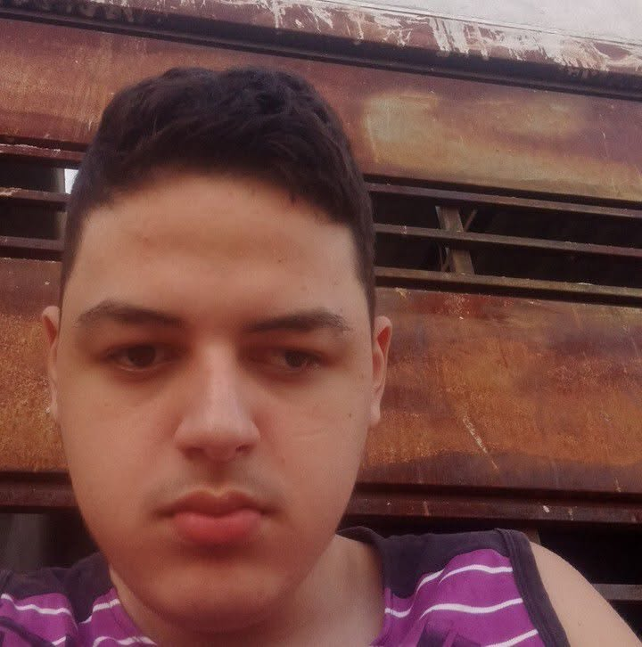

Projeto 1 bot de discord em python
Um bot simples para o Discord criado em Python, com comandos básicos.

Sou uma pessoa apaixonada por tecnologia e tentar coisas novas.
Olá! Meu nome é Ivan Baraúna e sou um desenvolvedor apaixonado por criar soluções inovadoras. Tenho experiência em HTML, CSS, Python e outras tecnologias web. Estou sempre em busca de aprender e aprimorar minhas habilidades.
Um bot simples para o Discord criado em Python, com comandos básicos.
Um site pessoal desenvolvido com HTML e CSS, apresentando meu portfólio e informações sobre mim.